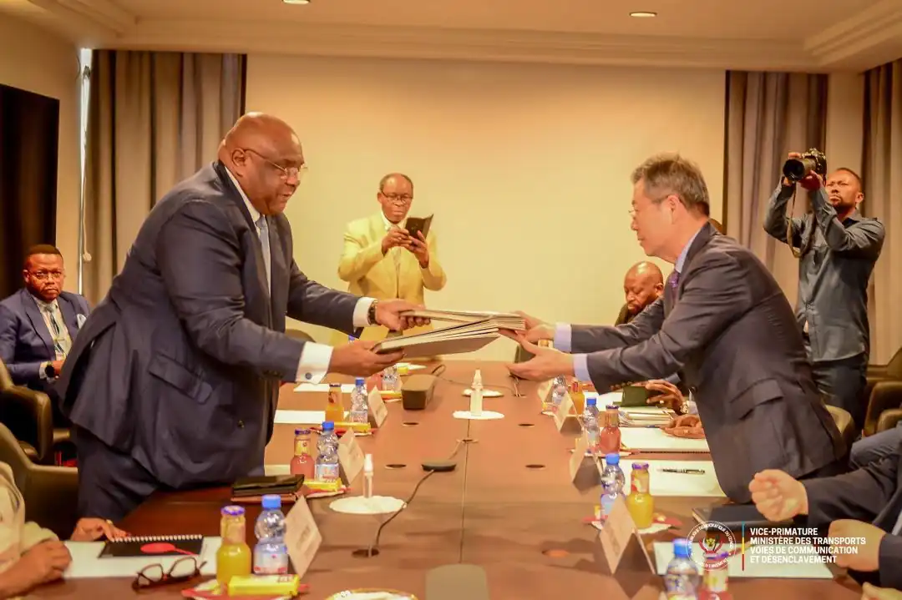

La signature du contrat de concession de 30 ans entre le Gouvernement et Masco Énergies et Construction SA.
La signature du contrat de concession de 30 ans entre le Gouvernement et Masco Énergies et Construction SA.
Un partenariat stratégique pour la relance des infrastructures.
La signature du contrat de concession de 30 ans entre le Gouvernement et Masco Énergies et Construction SA.
Un partenariat stratégique pour la relance des infrastructures. Le Gouvernement de la République Démocratique du Congo (RDC) et la société Masco Énergies et Construction SA ont récemment officialisé un contrat de concession d’une durée de 30 ans. Cet accord s’inscrit dans une volonté claire : redonner vie aux infrastructures stratégiques du pays, en particulier dans les secteurs de l’énergie et du transport ferroviaire. Ce partenariat long terme ouvre la voie à des investissements majeurs, visant à moderniser les équipements, renforcer les capacités locales et stimuler le développement socio-économique.
Les objectifs du contrat.
Le contrat de concession repose sur plusieurs axes prioritaires :Un contrat de 30 ans : pourquoi cette durée ?
La durée de 30 ans permet :Un levier pour le développement de Kisangani et de l’Est du pays.
Kisangani, carrefour stratégique de la RDC, est au cœur de ce contrat. La relance du chemin de fer et des infrastructures connexes permettra :Cette concession pourrait également devenir un modèle de partenariat public-privé pour d’autres provinces du pays.
Conclusion.
La signature de ce contrat de concession de 30 ans entre le Gouvernement et Masco Énergies et Construction SA représente un tournant majeur pour la RDC. Elle traduit une volonté politique forte de redonner souffle aux infrastructures, tout en s’appuyant sur l’expertise et l’investissement privé. Pour la population congolaise, en particulier celle de Kisangani, c’est un signe d’espoir : celui de voir renaître des voies ferrées, des emplois et une dynamique économique autour de projets concrets.